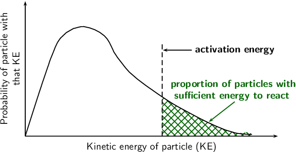
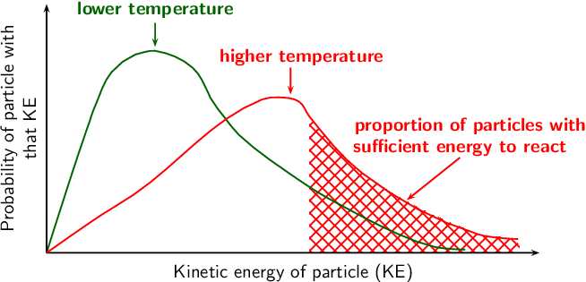

Earlier it was mentioned that it is the collision of particles that causes reactions to occur and that only some of these collisions are successful. This is because the reactant particles have a wide range of kinetic energies, and only a small fraction of the particles will have enough energy (and the correct orientation) to actually break bonds so that a chemical reaction can take place. The minimum energy that is needed for a reaction to take place is called the activation energy. For more information on the energy of reactions, refer to Grade 11 (Chapter 12).
Activation Energy
Activation energy
The minimum energy required for a chemical reaction to proceed.
Even at a fixed temperature, the energy of the particles varies, meaning that only some of them will have enough energy to be part of the chemical reaction, depending on the activation energy for that reaction (Figure fig-reactionrates-particle energy distribution). Increasing the reaction temperature has the effect of increasing the number of particles with enough energy to take part in the reaction, and increasing the reaction rate.

<code>
(0,-2.5)(10.8,3.1)
\newrgbcolor{darkgreen}{0 0.39 0}
\pscurve[linestyle=none,fillstyle=crosshatch,hatchcolor=darkgreen](5.97,-0.33)(6.34,-0.57)(6.66,-0.75)(7.845,-1.35)(8.53,-1.59)(9.1,-1.64)(9.1,-1.7)(9,-1.7)(8.5,-1.7)(8,-1.7)(7,-1.7)(5.97,-1.7)
\psframe[fillstyle=solid,fillcolor=white,linestyle=none](7.5,-1.2)(9.5,0.8)
\psline{->}(7,1.3)(6,1.3)
\rput(8.5,1.3){\textbf{activation energy}}
\rput(8.45,0.1){\textbf{\darkgreen proportion of particles with}}
\rput(8.4,-0.3){\textbf{\darkgreen sufficient energy to react}}
\psline[linecolor=darkgreen]{->}(8.5,-0.5)(7.6,-1.2)
\pscurve(1.19,-1.7)(1.295,-1.365)(1.97,0.695)(2.005,0.79)(2.02,0.84)(2.035,0.89)(2.075,1.0)(2.1,1.06)(2.415,1.715)(2.875,2.055)(2.9,2.06)(2.925,2.065)(2.975,2.08)(3,2.085)(3.05,2.1)(3.24,2.12)(3.95,1.8)(4.26,1.29)(4.28,1.24)(4.56,0.85)(4.825,0.53)(5.415,0.055)(5.45,0.03)(5.485,0.005)(5.55,-0.04)(5.58,-0.06)(5.61,-0.08)(5.65,-0.11)(5.97,-0.33)(6.34,-0.57)(6.66,-0.75)(7.845,-1.35)(8.53,-1.59)(9.1,-1.64)
\pcline{->}(1.19,-1.7)(1.19,3)
\aput{:U}{\parbox[c]{4cm}{\centering Probability of particle with that KE}}
\pcline{->}(1.19,-1.7)(10,-1.7)
\bput{:U}{Kinetic energy of particle (KE)}
\psline[linestyle=dashed](5.97,-1.7)(5.97,1.5)
</code>
The distribution of particle kinetic energies at a fixed temperature.
Remember that a molecule must have energy greater than the activation energy, as well as the correct orientation, for the reaction to take place.
Increasing the temperature of a reaction mixture raises the average kinetic energy of the particles. As can be seen on the graph (Figure fig-reactionrates-distributionwithT), a higher proportion of the particles can now react making the reaction faster. With the increased movement of the molecules the chances of a molecule having the correct orientation is also increased.

<code>
(0,-2.5)(12,3.2)
\newrgbcolor{darkgreen}{0 0.39 0}
\pscurve[linestyle=none,fillstyle=crosshatch,hatchcolor=red](6.155,0.88)(7.15,-0.19)(9.345,-1.35)(10.1,-1.54)(10.1,-1.7)(10,-1.7)(6.155,-1.7)
\psframe[fillstyle=solid,fillcolor=white,linestyle=none](8.5,-0.5)(10.5,1.5)
\rput(0,0){
\rput(3.24,2.9){\textbf{\darkgreen lower temperature}}
\psline[linecolor=darkgreen]{->}(3.24,2.65)(3.24,2.2)
\pscurve[linecolor=darkgreen](1.19,-1.7)(1.295,-1.365)(1.97,0.695)(2.005,0.79)(2.02,0.84)(2.035,0.89)(2.075,1.0)(2.1,1.06)(2.415,1.715)(2.875,2.055)(2.9,2.06)(2.925,2.065)(2.975,2.08)(3,2.085)(3.05,2.1)(3.24,2.12)(3.95,1.8)(4.26,1.29)(4.28,1.24)(4.56,0.85)(4.825,0.53)(5.415,0.055)(5.45,0.03)(5.485,0.005)(5.55,-0.04)(5.58,-0.06)(5.61,-0.08)(5.65,-0.11)(5.97,-0.33)(6.34,-0.57)(6.66,-0.75)(7.845,-1.35)(8.53,-1.59)(9.1,-1.64)
\pcline{->}(1.19,-1.7)(1.19,3)
\aput{:U}{\parbox[c]{4cm}{\centering Probability of particle with that KE}}
\pcline{->}(1.19,-1.7)(10.5,-1.7)
\bput{:U}{Kinetic energy of particle (KE)}
}
\rput(0,0){
\rput(9.2,0.7){\textbf{\red proportion of particles with}}
\rput(9,0.3){\textbf{\red sufficient energy to react}}
\psline[linecolor=red]{->}(9,0.1)(8,-0.7)
\pscurve[linecolor=red](1.19,-1.7)(2.2,-1)(2.835,-0.6)(5.26,1.2)(5.58,1.24)(5.96,1.16)(6.155,0.88)(7.15,-0.19)(9.345,-1.35)(10.1,-1.44)
\rput(6,2){\textbf{\red higher temperature}}
\psline[linecolor=red]{->}(5.8,1.8)(5.8,1.3)}
</code>
The distribution of particle kinetic energies with an increase in temperature. There is an increased number of particles with sufficient energy due to the higher temperature.
An endothermic reaction can be represented by:
i.e. a reaction that absorbs energy
This can be shown in an activation energy diagram (Figure fig-reactionrates-activationenergyendo). These graphs are also sometimes called a reaction profile or a potential energy graph.
A catalyst increases reaction rates in a slightly different way from other methods of increasing reaction rate. The function of a catalyst is to lower the activation energy so that a greater proportion of the particles have enough energy to react. A catalyst can lower the activation energy for a reaction by:
orienting the reacting particles in such a way that successful collisions are more likely
reacting with the reactants to form an intermediate that requires lower energy to form the product
Some metals e.g. platinum, copper and iron can act as catalysts in certain reactions. In our own bodies, we have enzymes that are catalysts, which help to speed up biological reactions. Catalysts generally react with one or more of the reactants to form a chemical intermediate, which then reacts to form the final product. The chemical intermediate is sometimes called the activated complex.
An activated complex occurs in reactions without catalysts as well as those with catalysts.
The following is an example of how a reaction involving a catalyst might proceed. A and B are reactants, is the catalyst, and D is the product of the reaction of A and B.
Step 1:
Step 2:
Step 3:
represents the intermediate chemical. Although the catalyst () is consumed by reaction 1, it is later released again by reaction 3, so that the overall reaction with a catalyst is as follows:
You can see from this that the catalyst is released at the end of the reaction, completely unchanged. Without a catalyst the overall reaction would be:
The catalyst has provided an alternative set of reaction steps, which we refer to as an alternative pathway. The pathway involving the catalyst requires less activation energy and is therefore faster.
<code>
(0,-2.5)(10.2,3.1)
\newrgbcolor{darkgreen}{0 0.39 0}
\pscurve[linestyle=none,fillstyle=vlines,hatchcolor=darkgreen](5.97,-0.33)(6.34,-0.57)(6.66,-0.75)(7.845,-1.35)(8.53,-1.59)(9.1,-1.69)(9.1,-1.7)(9,-1.7)(8.5,-1.7)(8,-1.7)(7,-1.7)(5.97,-1.7)
\pscurve[linestyle=none,fillstyle=hlines,hatchcolor=blue](4.825,0.53)(5.415,0.055)(5.45,0.03)(5.485,0.005)(5.55,-0.04)(5.58,-0.06)(5.61,-0.08)(5.65,-0.11)(5.97,-0.33)(6.34,-0.57)(6.66,-0.75)(7.845,-1.35)(8.53,-1.59)(9.1,-1.69)(9.1,-1.7)(9,-1.7)(8.5,-1.7)(8,-1.7)(4.825,-1.7)
\psframe[fillstyle=solid,fillcolor=white,linestyle=none](7.5,-1.2)(9.5,0.8)
\psline[linecolor=darkgreen]{->}(7,0.3)(6,0.3)
\psline[linecolor=blue]{->}(5.9,1.2)(4.9,1.2)
\rput(8.5,0.3){\textbf{\darkgreen activation energy}}
\rput(7.4,1.4){\textbf{\blue activation energy}}
\rput(7.2,1){\textbf{\blue with a catalyst}}
\pscurve(1.19,-1.7)(1.295,-1.365)(1.97,0.695)(2.005,0.79)(2.02,0.84)(2.035,0.89)(2.075,1.0)(2.1,1.06)(2.415,1.715)(2.875,2.055)(2.9,2.06)(2.925,2.065)(2.975,2.08)(3,2.085)(3.05,2.1)(3.24,2.12)(3.95,1.8)(4.26,1.29)(4.28,1.24)(4.56,0.85)(4.825,0.53)(5.415,0.055)(5.45,0.03)(5.485,0.005)(5.55,-0.04)(5.58,-0.06)(5.61,-0.08)(5.65,-0.11)(5.97,-0.33)(6.34,-0.57)(6.66,-0.75)(7.845,-1.35)(8.53,-1.59)(9.1,-1.64)
\pcline{->}(1.19,-1.7)(1.19,3)
\aput{:U}{\parbox[c]{4cm}{\centering Probability of particle with that KE}}
\pcline{->}(1.19,-1.7)(10,-1.7)
\bput{:U}{Kinetic energy of particle (KE)}
\psline[linestyle=dashed,linecolor=darkgreen](5.97,-1.7)(5.97,0.5)
\psline[linestyle=dashed,linecolor=blue](4.825,-1.7)(4.825,1.5)
</code>
The proportion of particles that have enough energy to react is increased in the presence of a catalyst.
Catalyst
A catalyst speeds up a chemical reaction, without being consumed by the reaction. It increases the reaction rate by lowering the activation energy for a reaction.
Energy diagrams are useful to illustrate the effect of a catalyst on reaction rates. Catalysts decrease the activation energy required for a reaction to proceed (shown by the smaller magnitude of the activation energy on the energy diagram in Figure fig-reactionrates-catalyst), and therefore increase the reaction rate. Remember that with a catalyst, the average kinetic energy of the molecules remains the same but the required energy decreases (Figure fig-reactionrates-catalystprob).
The effect of a catalyst on the activation energy of an endothermic reaction. The catalyst would act in the same way for an exothermic reaction.
Exercises
For each of the following, say whether the statement is true or false. If it is false, re-write the statement correctly.
A catalyst increases the energy of reactant molecules so that a chemical reaction can take place.
False. A catalyst lowers the activation energy of a reaction, so that a chemical reaction can take place.
Increasing the temperature of a reaction has the effect of increasing the number of reactant particles that have more energy than the activation energy.
True
A catalyst does not become part of the final product in a chemical reaction.
True
~ of zinc pieces are added to ~ of ~ hydrochloric acid. To investigate the average rate of the reaction, the change in the mass of the flask containing the zinc and the acid is measured by placing the flask on a direct reading balance. The reading on the balance shows that there is a decrease in mass during the reaction. The reaction which takes place is given by the following equation:
Why is there a decrease in mass during the reaction?
The reaction does not take place in a sealed container and so the hydrogen gas can escape from the reaction vessel.
The experiment is repeated, this time using 5 g of powdered zinc instead of pieces of zinc. How will this influence the average rate of the reaction?
The rate will increase since there will be a greater surface area of zinc to react with the acid.
The experiment is repeated once more, this time using ~ of zinc pieces and ~ of ~ hydrochloric acid. How does the average rate of this reaction compare with the original reaction rate?
There is a larger volume of hydrochloric acid. However the concentration is not increased and so the reaction rate is unchanged.
What effect would a catalyst have on the average rate of this reaction?
(IEB Paper 2 2003)
The average rate of reaction would increase.
~ of calcium carbonate powder reacts with ~ of a ~ solution of hydrochloric acid. The gas that is produced at a temperature of is collected in a gas syringe.
Write a balanced chemical equation for this reaction.
The average rate of the reaction is determined by measuring the volume of gas that is produced in the first minute of the reaction. How would the average rate of the reaction be affected if:
a lump of calcium carbonate of the same mass is used
The surface area is decreased, therefore the average rate of reaction would decrease.
~ of ~ hydrochloric acid is used
The average rate of reaction depends on the concentration of liquid reactants and not on the volume. The concentration is increased however, so the rate will increase.